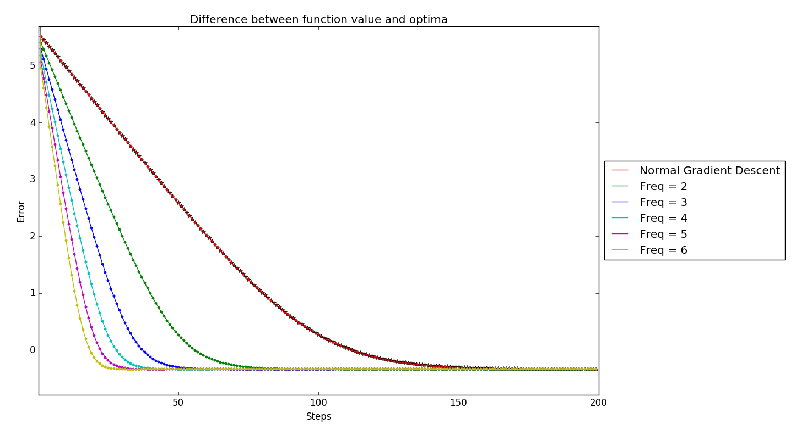
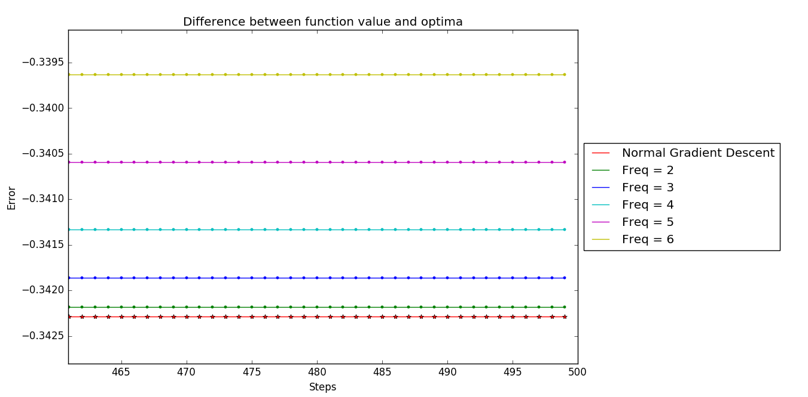
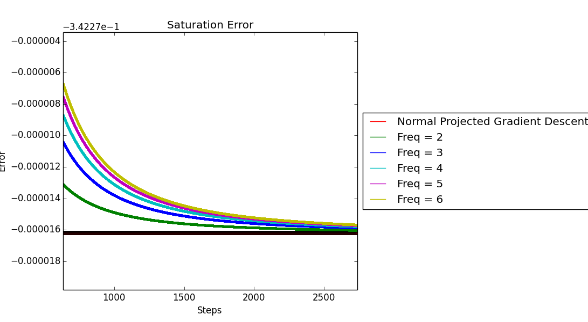

I was sitting in a guest lecture of Prof. Shankar Mahadevan from University of Massachusettes when he had come to my undergrad univ IIT Madras, where he was talking about his (at that time) recent work with his studnet Ian Gemp. He was stating intoduction of variational inequalties to a relatively clueless audience, introducing the age old methods of extragradient methods, etc.
In the middle he said somehtign which pinged my interest. He was saying about how Ruunge-Kutta methods method when used in Reinforcement learning to their problem seems to go on being more faster adn faster as we had mroe skippings/ more terms we were considering. THis was followed by a quesiton “So how far can we keep including these terms?”
This seemed sort of surreal to me. A system which just keeps accelerating towards perfection ? This needed more investigation.
Glimpse of Ruunge_kutta
Runge-Kutta method used to find approximate solutions in Ordinary Differential Equations seemed a lot close to the form of equations I was getting. (Maybe it’s the same … and this all is obvious thing… Not sure)\
A General Runge-Kutta Gradient descent looks like,
$$\begin{equation}k_1 = \alpha \nabla F(x_k)\end{equation}$$ $$\begin{equation}k_2 = \alpha \nabla F(x_k - a_{21}k_1)\end{equation}$$ $$\begin{equation}k_3 = \alpha \nabla F(x_k - a_{31}k_1 - a_{32}k_2)\end{equation}$$
So for general term,
$$\begin{equation}k_s = \alpha \nabla F(x_k - a_{s1}k_1 - a_{s2}k_2 - \dots - a_{s,s-1}k_{s-1})\end{equation}$$
The next iterate $x_k$ in the sequence of the algorithm as,
$$\begin{equation}x_{k+1} = x_{k} - \sum_{i=1}^sb_i k_i\end{equation}$$
Constrained Convex Optimization
A simple constrained Optimization problem can be stated as, $$\begin{equation} \min\ \ \ f(x)\ \ \ \ \text{over}\ \ \ \ x\in \chi \end{equation}$$
where $f(x)$ is a doubly differentiable convex function. The normal gradient descent considering the steepest descent criteria would involve the following update equation,
$$\begin{equation} x_{k+1} = x_{k} - \eta\nabla f(x_k) \end{equation}$$
Since the next iterative point $x_{k+1}$ needs to belong to the constrained set $\chi$, we have the Projection step as,
$$\begin{equation} x_{k+1} = P_{\chi}(x_{k} - \eta\nabla f(x_k)) \end{equation}$$
where the projection operator $P_{\chi}(x)$ is defined as, $$\begin{equation} P_{\chi}(x) = \arg\min_{y\in \chi}||x-y||^2 \end{equation}$$
What problem are we looking at here?
In many constrained optimization problems, one of the major computation issue with projected gradient descent is computing the Projection of a candidate variable $x_k$. Hence, I am trying to reduce the total number of Projection computations required for the algorithm to converge.
Solution?
Taking the motivation from Ruunge-Kutta logic, consider the following iterations where we take projections on alternate steps as shown below. (I am calling it 2-step skip projection), $$\begin{equation} y_{k+1} = x_{k} - \eta_1\nabla f(x_{k})\end{equation}$$
$$\begin{equation} x_{k+1} = P_{\chi}(y_{k+1}-\eta_2\nabla f(y_{k+1}))\end{equation}$$
Similarly, we can consider a 3-step skip projection as well, $$\begin{equation} y_{k+1} = x_{k} - \eta_1\nabla f(x_{k})\end{equation}$$
$$\begin{equation} z_{k+1} = y_{k+1} - \eta_2\nabla f(y_{k+1})\end{equation}$$
$$\begin{equation} x_{k+1} = P_{\chi}(z_{k+1}-\eta_3\nabla f(z_{k+1}))\end{equation}$$
We can keep increasing the number of skips. Plotting for a simple example,

Here the each point in the graph represents the $error(k) = \log (f(Pr(x_k)) - f(x^*))$.

The two extremes
The two extreme can be thought of as follows: 1) Standard Projected gradient descent
$$\begin{equation} x_{k+1} = P_{\chi}(x_{k} - \eta\nabla f(x_k)) \end{equation}$$
2) Infinite step look ahead gradient descent
This extreme case of this skipping will be when we are projecting only after we reach the optimal point $$\begin{equation} y = \arg\min f(x) \end{equation}$$
$$\begin{equation} x^* = P_{\chi}(y) \end{equation}$$
The problem with this being, the fixed point of both these cases ned not be the same and therein problem lies.
But this need not be the same as the fixed point of the iterative scheme, $$\begin{equation} x_{k+1} = P_{\chi}(x_{k} - \eta\nabla f(x_k)) \end{equation}$$
Thus the error between this two schemes is what we are seeing in the Figure 2.
Possibly Workaround
We can make $\eta$(stepsize) step dependent like $\frac{1}{k}$ which follows $\sum \eta_k = \infty$ and $\sum \eta^2 < \infty$ which will again ensure that $error \rightarrow 0$ as $k \rightarrow \infty$.
Using the same logic, I simulated it with the same functions as previous plots. Results are as follows,

Drawbacks
Even if this approach shows some change in the number of projections required, but this change wont be significant enough for a factor reduction. There are no significant change in the convergence rate of this new proposed algorithm, and hence I dont think there is much hope for the idea to form a good enough innovation.
License
Copyright 2017 Parth Thaker.
Released under the MIT license.